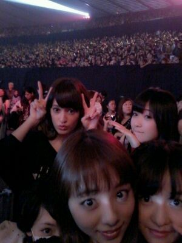
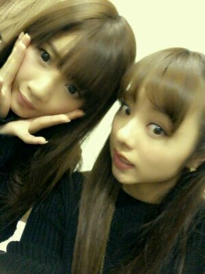

| 2012/11 12 Mon | 川村真洋 ヤッホー★ 今日はレコー ディング/ ろってぃ- |
ほーーーい♪
ろってぃでえす 。))
(・▽・)ノ ケッ!!
・・・・・
色々あり過ぎて
何を どれから どう
話していけばいいのか
わからない。笑
とりあえず 一週間
乗り越えたよん♪
最高に楽しかったよっ
(・∀・)))!!★
ミュージックジャパン
GirlsAward
ハッピーミュージック
4thに向けての撮影
岡山でのlive☆
写メも色々撮ったし
次のblogとかにも
あげるね♪

この写メは
ガールズアワードの時の
写メ★
この日は ちょっと
緊張したなぁ〜´・∀
見ての通り。
お客様でうめつくされてるよっ!!
まひろも本当
感動した*^^*
次も是非是非っ!!
よんで頂けると
嬉しいです(〃ω〃)
そしてっ //
これがぁ〜 ひめかと私。
新曲 『 制服のマネキン 』
初披露 MJの時 !!∀・´
始まる前
皆で練習したりしてました。
この写メ
楽しそうでしょっ=・ω・=♪?
楽しかったの。
テンションあがってる時
だったから*^^*
ほんでこれが,

せいたん＆ろってぃ-♪
岡山live☆の時だよ！
live終わった直後に
撮った写メでし 〃▽〃)/
岡山live 本当行けて
よかた...。
みなちゃまーーーー。
大好きでし...(〃_〃)
本当にありがとうございました。
たくさんの人に
支えられているのだと...
改めてまた感じることが
できました。
感謝しておりますっ m(__)mコテッ
それに、
school of Rock
聞いていただいて
ありがとうございました。
★☆★
あの時実は
なかなか緊張して
ずっと つばのみ込んでました(・・;)
ではではっ、
また更新しますっ´∀`))/
次,質問返し しまぁ〜す ))
１つだけさきこたえちゃおう。
★ろってぃ-、htc何色
使ってるの?
☆ まひろ赤やで〜い*´ω`*
以上っ ろってぃでした☆